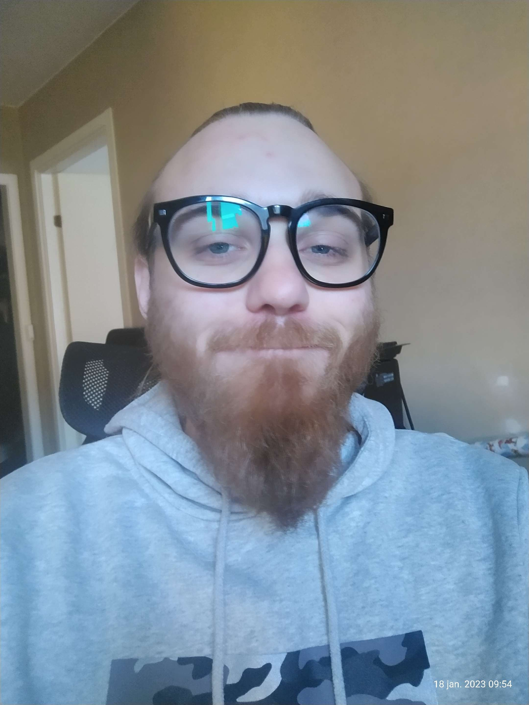

ARBETSLIVSERFARENHET
Teamleader
Citymail AB - Helsingborg
November 2022 - Maj 2022
Enheten jag arbetade på hade 9 tillsvidare-anställda och 4 behovsanställda. Min uppgift som arbetsledare var att planera och justera bemanning utefter postvolym dag för dag. Utöver detta ansvarade jag och min Teamleader-kollega för att upprätthålla kvalitén på enheten. Vi såg till att samtliga av våra medarbetare utförde sina uppgifter utefter de rutiner som fanns, och följde kontinuerligt upp.
Allt i allo
Behovstanställning Tergent AB - Helsingborg
2017-2022
Mina arbetsuppgifter hos Tergent AB var väldigt varierande. Det var allt ifrån olika typer av arbete på företagets lager, såsom varuplock och montering, till trädgårdsarbete och andra behövligheter.
Diskare
Behovsanställning Örenäs Slott Hotell & Konferens AB - Glumslöv
Juni 2019 - September 2019
Brevbärare
Behovsanställning Citymail AB - Helsingborg
November 2018 - Maj 2019
UTBILDNING
Gymnasieutbildning i Naturvetenskap
Olympiaskolan - Helsingborg
Augusti 2014 - Juni 2017
Certifieringar och licenser
Truckkort TLP 10 A & B
Juni 2016
Trucktyp A1-A4 B1-B6
